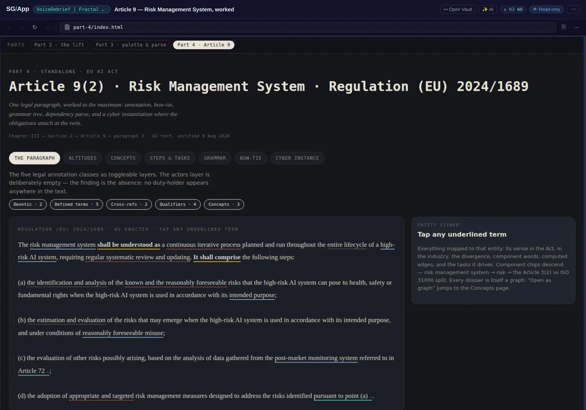
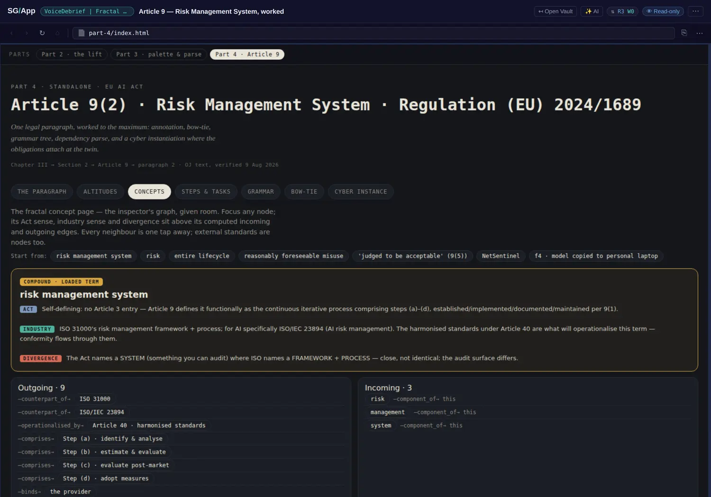

The empty layer, and the divergence
Two of this book's claims have been argued for chapters without a real instance to point at: that a named absence beats a hidden one, and that merging vocabularies erases the disagreement you most need. This vault has an instance of each, and they are the two views most worth studying in it.
Five layers, and one that is empty on purpose
The paragraph view renders Article 9(2) with five toggleable annotation classes over it: deontic · 2, defined terms · 5, cross-references · 2, qualifiers · 4, concepts · 3. There is a sixth layer, actors, and it is empty — not missing, not hidden behind a toggle that does nothing, but present and empty, with the app stating the reason: no duty-holder appears anywhere in the text.
A view that can show you nothing, and tell you that nothing is the result, is doing something a highlighter cannot. The distinction this book keeps drawing — between "we did not look" and "we looked and there is nothing there" — is here as an interface element rather than a paragraph of prose.

The grammar answers the question the annotation raised
The Grammar view merges dependency arcs with the word-class tree of the same sentence, then labels the semantic roles on understand: ARGM-MOD shall, the deontic carrier; ARG1 the risk management system; ARG2 as a continuous iterative process — and ARG0 marked implicit, recovered from Article 9(1) and 16(a).
That is the explanation for the empty layer, and it upgrades the finding from an observation to a property: "deontic modal + agentless passive: the obligation is explicit and the duty-holder is grammatical absence." The missing party is not a drafting oversight and not a gap in the extraction. It is a feature of the legal register, and the parse is what demonstrates it. An absence that can be explained is worth more than an absence that is merely reported — and this is the difference between a gap in a graph and a gap in a spreadsheet.
Every term carries two senses, and the gap between them is the product
The Concepts view is a graph page per term. Focus risk management system and you get its Act sense (self-defining: no Article 3 entry, because Article 9 defines it functionally), its industry sense (ISO 31000's framework plus process; ISO/IEC 23894 for AI), and then the finding stated between them:
"The Act names a SYSTEM (something you can audit) where ISO names a FRAMEWORK + PROCESS — close, not identical; the audit surface differs."
The vault's own gloss is the sentence this book has been trying to write for two chapters: the divergence is not an error to reconcile; it is the product. A merged vocabulary would have produced one definition of "risk management system" and silently chosen whose audit surface applied. Keeping both, with the gap named, is what lets a reader see that the choice exists at all.
Underneath sit nine outgoing and three incoming computed edges, with external standards as first-class nodes rather than citations in prose — which is what makes the divergence queryable rather than merely stated.

- Chapter 2, idea five (a named absence beats a hidden one) gains its instance: an annotation layer that is present and empty, with the reason stated in the interface.
- Chapter 5 (don't merge vocabularies) gains the strongest example in the estate: two senses of one term kept apart, with the divergence named as the output and external standards as first-class nodes.
- Chapter 4 (the edge set) gains a live example of computed edges with direction stated (nine outgoing, three incoming) over a term rather than an entity.
- The evidence layer proposed in review r002 gains a model for how to show an absence honestly: not a blank, but a named empty class with its cause attached.